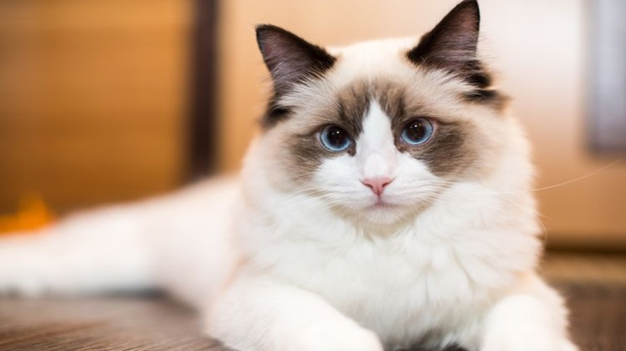
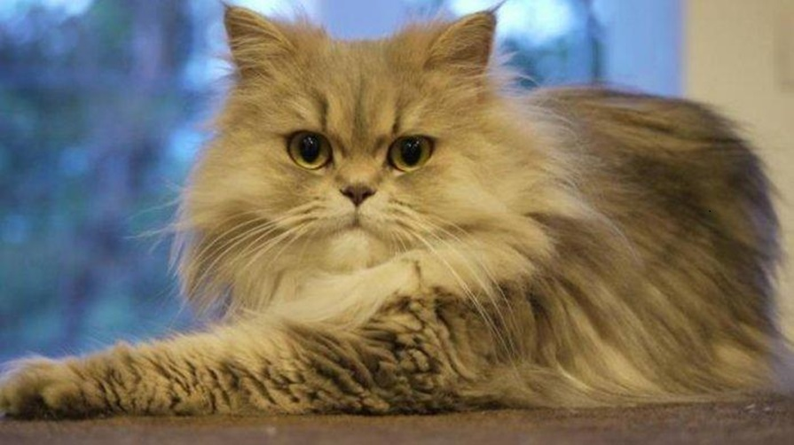

Rekomendasi Ras Kucing yang Cocok Untuk Anda Pelihara

Kucing adalah hewan peliharaan yang memiliki beragam ras dengan ciri, penampilan, dan kepribadian yang berbeda. Memilih ras kucing yang tepat untuk dipelihara sangat penting untuk memastikan kucing Anda merasa nyaman dan bahagia. Berikut adalah beberapa rekomendasi ras kucing yang cocok untuk dipelihara, beserta detail karakteristiknya :
1. Ragdoll
Ragdoll adalah kucing yang ramah dan penyayang, menjadikannya hewan peliharaan keluarga yang cocok bagi Anda yang membutuhkan teman. Ragdoll dikenal dengan bulu panjangnya yang lembut dan kepribadiannya yang tenang. Mereka cenderung bersikap ramah terhadap orang lain dan mudah beradaptasi dengan lingkungan baru.
2. Scottish Fold
Kucing Scottish Fold memiliki telinga yang melipat ke bawah, dan memiliki kepribadian yang tenang dan ramah. Mereka dikenal dengan sifatnya yang penyayang dan mudah bergaul dengan manusia maupun hewan peliharaan lain. Scottish Fold juga cenderung menjadi kucing yang setia dan loyal terhadap pemiliknya.
3. Sphynx
Kucing Sphynx tidak memiliki bulu, namun memiliki kepribadian yang ramah dan suka bermain. Meskipun terlihat unik dengan kulit tanpa bulu, Sphynx adalah kucing yang penuh kasih sayang dan aktif. Mereka sering mencari perhatian dan suka berinteraksi dengan manusia.
4. Maine Coon
Maine Coon memiliki ukuran tubuh yang besar dan bulu yang tebal, serta memiliki kepribadian yang ramah dan tenang. Mereka dikenal sebagai kucing yang ramah terhadap anak-anak dan hewan peliharaan lain. Maine Coon juga memiliki sifat yang cerdas dan mudah dilatih.
5. Persia
Kucing Persia memiliki bulu yang panjang dan tebal, serta memiliki kepribadian yang tenang dan manja. Mereka dikenal dengan bulu indahnya yang memerlukan perawatan intensif. Persia cenderung menjadi kucing yang santai dan menyukai lingkungan yang tenang.
6. Siamese
Kucing Siamese memiliki bulu pendek dan memiliki kepribadian yang cerdas, penuh kasih sayang, dan ramah. Mereka dikenal dengan sifat yang aktif dan suka berinteraksi dengan manusia. Siamese juga cenderung menjadi kucing yang vokal dan ekspresif.
7. Birman
Kucing Birman memiliki bulu yang lembut dan tebal, serta memiliki kepribadian yang lembut, manja, penyayang, dan ramah dengan manusia. Mereka dikenal sebagai kucing yang tenang namun suka bermain. Birman juga cenderung menjadi kucing yang setia dan penuh kasih sayang terhadap pemiliknya.
Memilih ras kucing yang tepat sangat penting untuk memastikan kucing Anda merasa nyaman dan bahagia. Selain itu, pastikan Anda memahami kebutuhan kesehatan dan perawatan ras kucing yang Anda pilih sebelum memutuskan untuk memeliharanya. Dengan memilih ras kucing yang tepat, Anda dapat menikmati kebahagiaan dan kebersamaan dengan hewan peliharaan yang lucu dan ramah selama bertahun-tahun.